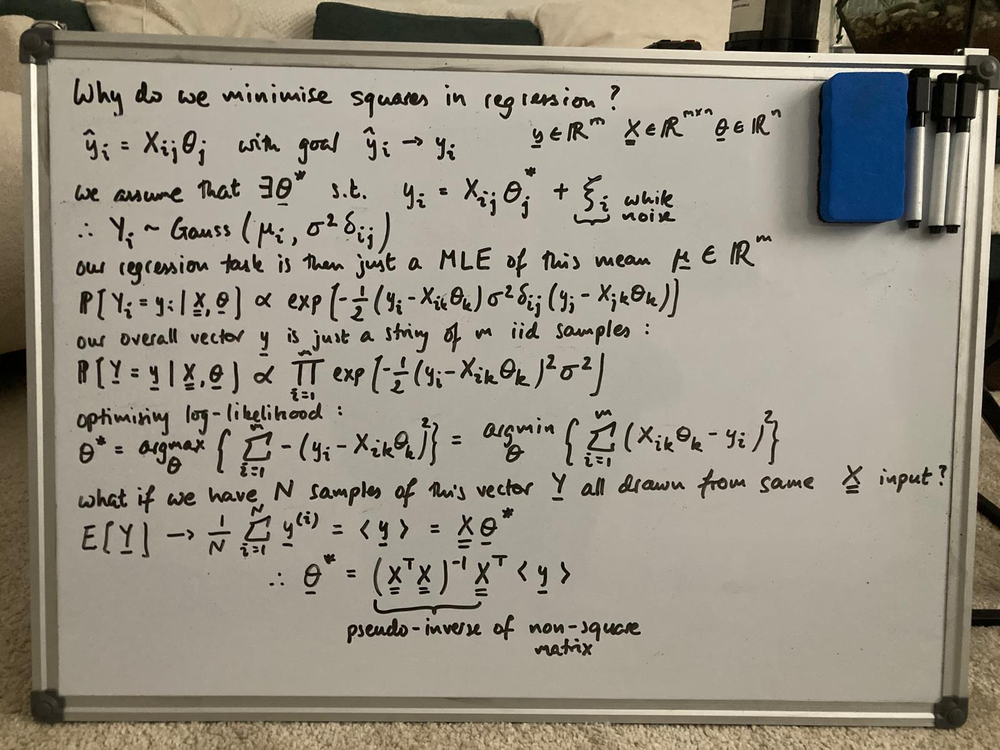

“Essentially, all models are wrong, but some are useful.” George E. P. Box
Introduction
This is by no means a new topic nor a particularly complex one, but I generally like to know where stuff in math or science really comes from. If you’re reading this, you are probably familiar with Linear Regression or Least Squares Regression (or whatever other name you’ve heard it called). The premise is that if we have some data points \(y_i\) and we measure a series of features \(\vec{x}^{(i)}\), if our features are relevant predictors of our data, there might exist a linear (or affine) model which relates them:
\[ \begin{align} y_i = \theta_1 x^{(i)}_1 + \theta_2 x^{(i)}_2 + ... = \mathbf{\theta} \cdot \mathbf{x}_i \end{align} \]
We should think of \(y_i\) as the output, and each entry (\(n\) in total) of \(\vec{x}^{(i)}\) as some feature. As good statisticians, we might measure \(m\) such outputs \(y_i\) and for each, their corresponding input feature vector \(\mathbf{x}_i\). It is convenient to concatenate our \(y_i\) into a column vector \(\mathbf{y} \in \mathbb{R}^m\) and our \(\mathbf{x}_i\) vectors as rows of a matrix \(X \in \mathbb{R}^{m \times n}\). For every pair \((y_i, \mathbf{x}_i)\) we will still use the same summation coefficients \(\mathbf{\theta} \in \mathbb{R}^n\) (this is the premise of linear regression).
\[ \begin{align} \mathbf{y} = \matrix{X} \mathbf{\theta} \end{align} \]
I personally prefer working in index notation (the arguments scale easily to arbitrary dimensions) so I’ll stick to that. So far we have been dealing with this idealised scenario where there exists this optimal projection direction which we’ll denote as \(\theta_j^{\ast}\). If this value exists, our optimisation task is simply to converge our model parameter \(\theta_j\) to this value such that our model outputs \(\hat{y}_i\) closely match the true measured values \(y_i\). I want to validate this claim of there existing such an optimal parameter \(\theta_j^{\ast}\).

Why Least Squares?
We can now start talking in terms of probability. We define our dataset to be \(\mathcal{D} = \{(y_i, \mathbf{x}_i)\}_{i=1}^{N}\). In regression, we generally take the \(y_i\) to be random variables whilst the feature vectors \(\mathbf{x}_i\) are treated as exact non-random quantities (this is of course a modelling over-simplification). We must assume some randomness in \(y_i\) otherwise the conditional distribution over the labels collapses to a delta cone which we cannot make much use of. It should also be intuitively sensible to assume that our label measurements will be noisy. For the (or OLS) solution, we simply seek to maximise the likelihood of our probabilistic labels given our choice of parameters.
We generally take the noise in our labels to be zero mean-gaussian. This is equivalent to writing \(y_i = \mu_i + \xi_i\) where \(\xi_i \sim \mathcal{N}(0, \sigma^2)\) and \(\mu_i = X_{ij}\theta_j\). This is sumarrised below.
\[ \begin{align} Y_i \sim \mathcal{N}(X_{ij}\theta_j, \sigma^2 \delta_{ij}) \end{align} \]
For each datum \(y_i\) there is a corresponding distribution. All have the same variance (by our assumption of the noise) but the mean will be different - importantly, the mean is always coupled to the input feature vector. Equivalently, we can think of the concatenated vector of measured outputs \(\mathbf{y}\) as being a sample from:
\[ \begin{align} \mathbf{Y} \sim \mathcal{N}(\matrix{X}\mathbf{\theta}, \sigma^2 \mathbb{I}) \end{align} \]
Our goal parameter \(\theta_j^{\ast}\) is inside the distribution’s mean. If we had many such vectors \(\mathbf{y}_i\) all drawn from the same data matrix \(\matrix{X}\), the job of finding the mean would be straightforward (we’ll get back to this later). We generally only measure one such \(\mathbf{y}\). Writing out the gaussian noise explicitly we have:
\[ \begin{align} p_{\matrix{X}, \mathbf{\theta}}(y_i) \propto \exp\Bigg[-\frac{1}{2} &(y_i - X_{ik}\theta_k) (\sigma^2 \delta_{ij})^{-1} (y_j - X_{jk}\theta_k) \Bigg] \end{align} \]
We of course want the maximum likelihood estimator (MLE) of our parameter vector \(\mathbf{\theta}_{MLE}\). For a string of \(m\) such iid samples we can maximise the log-likelihood, omitting constant terms like the variance \(\sigma^2\) or the normalisation factors, we have:
\[ \begin{align} \mathbf{\theta}_{MLE} &= \arg\max_{\theta} \prod_{i=1}^m p_{\matrix{X}, \mathbf{\theta}}(y_i)\\ &= \arg\max_{\theta} \sum_{i=1}^m \log p_{\matrix{X}, \mathbf{\theta}}(y_i) \\ &= \arg\max_{\theta} \left\{ \sum_{i=1}^{m} -\frac{1}{2} (y_i - X_{ik} \theta_k)^2 \right\} \\ &= \arg\min_{\theta} \left\{ \sum_{i=1}^{m} (y_i - X_{ik} \theta_k)^2 \right\} \end{align} \]
Note that I am explicitly writing \(p_{\matrix{X}, \mathbf{\theta}}(y_i)\) rather than \(p(y_i | \matrix{X}, \mathbf{\theta})\). To keep things rigorous, we should only condition on random variables.
This is now the familiar form of the problem with solution \(\mathbf{\theta} = (\matrix{X}^T \matrix{X})^{-1}\matrix{X}^T \mathbf{y}\). Now we can revisit the suggestion of arriving at this answer by collecting lots of sample vectors \(\mathbf{y}_i\) (all from the same data matrix \(\matrix{X}\)) and finding their arithemtic mean. The process would like like this:
\[ \begin{align} \langle \mathbf{y} \rangle &= \frac{1}{N} \sum_{i=1}^{N} \mathbf{y}_i \\ &= \matrix{X}\mathbf{\theta}_{MLE} \\ \rightarrow \mathbf{\theta}_{MLE} &= (\matrix{X}^T \matrix{X})^{-1}\matrix{X}^T \langle \mathbf{y} \rangle \end{align} \]
Where we are implicitly using the weak Law of Large Numbers (wLLN) - \(\lim_{N \to \infty} \frac{1}{N} \sum_{i=1}^{N} \mathbf{y}_i = \mathbb{E}[\mathbf{y}]\) - and the pseudo-inverse in the final line. Interestingly/unsurprisingly, we arrive at the same result. We actually don’t even need to invoke wLLN here as our sampled vectors \(\mathbf{y}_i\) are sampled from a gaussian and the arithmetic mean turns out to be the MLE for a gaussian anyway.
Incorporating Priors
So far we have made no assumption about the distribution of our summation coefficients \(\theta_j\). Suppose we are trying to predict height in a sample of people. We might collect feature data for each person including: parent height, person weight, parent weight, …, annual salary etc. Intuitively, some feature variables will be more important and require larger summation coefficient or weighting than others. More generally, we want to make use of any prior knowledge of the distribution of \(\mathbf{\theta}\). This is known as regularisation. We now require a more rigorous Bayesian treatment of the problem. Ultimately, we want to extract a distribution over our parameters \(\mathbf{\theta}\) given the observed dataset \(\mathcal{D}\).
We first require the standard Bayesian inference step to reach the posterior:
\[ \begin{align} p(\mathbf{\theta} | \mathcal{D}) &= \frac{p(\mathcal{D} | \mathbf{\theta}) p(\mathbf{\theta})}{p(\mathcal{D})} \\ &\propto p(\mathbf{\theta})\prod_{i=1}^m p_{\matrix{X}}(y_i | \mathbf{\theta}) \end{align} \]
When optimising in the Bayesian framework, we can drop the \(p(\mathcal{D})\) term as it is not a function of \(\mathbf{\theta}\) and thus will vanish under any differentiation. Our estimator will now be the maximum a-posteriori estimator (MAP) rather than the MLE.
\[ \begin{align} \mathbf{\theta}_{MAP} &= \arg\max_{\theta} p(\mathbf{\theta} | \mathcal{D}) \\ &= \arg\max_{\theta} \{ p_{\matrix{X}}(\mathbf{y} | \mathbf{\theta}) p(\mathbf{\theta}) \} \end{align} \]
A common assumption is that the weights are also iid gaussian with \(\theta_j \sim \mathcal{N}(0, \tau^2)\) thus for all \(n\) weights in our weight vector we have that \(p(\mathbf{\theta}) \propto \prod_{j=1}^{n} \exp\Bigg[\frac{\theta_j^2}{2\tau^2} \Bigg]\). Evaluating the posterior gives us:
\[ \begin{align} p(\mathbf{\theta} | \mathcal{D}) &\propto \prod_{i=1}^{m} \exp\Bigg[-\frac{1}{2\sigma^2} (y_i - X_{ik}\theta_k)^2 \Bigg] \prod_{j=1}^{n} \exp\Bigg[-\frac{\theta_j^2}{2\tau^2} \Bigg] \\ \mathbf{\theta}_{MAP} &= \arg\max_{\theta} \left\{ \sum_{i=1}^{m} -\frac{1}{\sigma^2} (y_i - X_{ik} \theta_k)^2 + \sum_{j=1}^{n} -\frac{\theta_j^2}{\tau^2} \right\} \\ &= \arg\min_{\theta} \left\{ \sum_{i=1}^{m} (y_i - X_{ik} \theta_k)^2 + \lambda \sum_{j=1}^{n} \theta_j^2 \right\} \\ \text{where } \lambda &= \frac{\sigma^2}{\tau^2} \end{align} \]
This is the Ridge regression which we interpret as punishing large coefficients (in a loss function sense). The analytic solution is now \(\mathbf{\theta} = (\matrix{X}^T \matrix{X} + \lambda \mathbb{I})^{-1}\matrix{X}^T \mathbf{y}\). A full bias-variance analysis (a topic for another post) reveals that this estimator is (unsurprisingly) biased but with lower variance. By restricting our search for parameters which also satisfy our assumption of the underlying parameter distribution, the spread of our optimal parameter will intuitively be smaller at the cost of bias.
Another common assumption of the underlying distribution is the Laplace or double-exponential assumption. This corresponds to \(p(\theta_j) = \frac{1}{2b}\exp [-\frac{|\theta_j|}{b}]\). This symmetric distribution is much narrower than a gaussian with a much sharper gradient around zero. This shape is useful if we assume that not only are weights evenly distributed about zero, but many weights are exactly zero. Such an assumption is present in cases where we know that only a small subset of our feature space is relevant at all (but we don’t know apriori which features these are so we measure all of them anyway). An identical treatment to the above discussion on Ridge gives:
\[ \begin{align} \mathbf{\theta}_{MAP} &= \arg\min_{\theta} \left\{ \sum_{i=1}^{m}(y_i - X_{ik}\theta_k)^2 + \lambda \sum_{j=1}^{n} |\theta_j| \right\} \\ \text{where } \lambda &= \frac{2\sigma^2}{b} \end{align} \]
This is the Lasso regression which also punishes large coefficients but is less forgiving for very small ones (unlike Ridge). The absolute value function is not differentiable at zero so there is no analytic solution for \(\mathbf{\theta}\). We usually proceed by sub-gradient descent (see here).